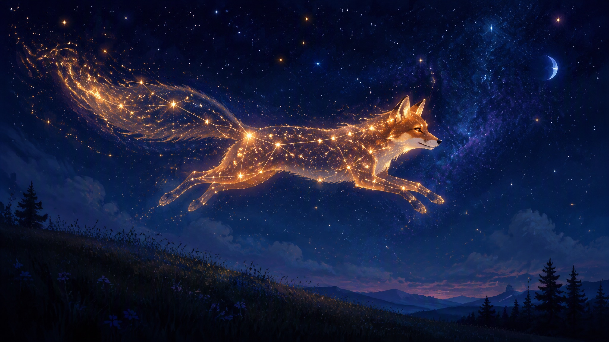

Techniques
How the sausage — er, the fox — gets made. Every featured piece carries its own "Making of": stages, time-lapse, and the actual brushes used.
Making of · Starlight Fox

1 · Sketch
loose gesture, 10 min, 6B pencil brush
2 · Lines & shapes
big shapes first; the hill comes before the fox
3 · Flat colors
palette locked: indigo, bone white, one warm gold
4 · Light & final
stars painted one by one; glow layer on soft-light
Time-lapse
Every Procreate piece records its own time-lapse automatically. Short loops play right here on the page; full-length versions (this one is 4 min 12 s) live on the unlisted YouTube channel, linked from the artwork page.
ProcreateiPad Air6B pencil brushsoft-light glow~3h total
Favorite brushes & habits
- Dry ink for lines — it forgives wobble beautifully
- 6B pencil for every sketch, always, forever
- Glow = duplicate layer → gaussian blur → soft light, not the bloom tool
- Palette rule: 3 colors + 1 accent. Break it only for good reasons
- Flip the canvas horizontally every 20 minutes to catch wonky anatomy
- Time-lapse on, always — future-me loves watching them
prototype — stage images are simulated with filters; the real page uses actual WIP exports + embedded time-lapse video